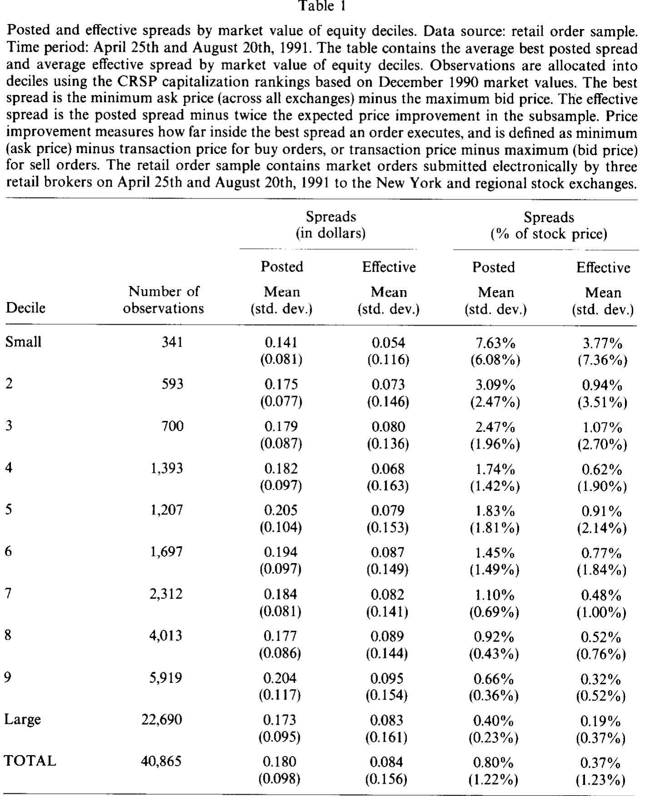
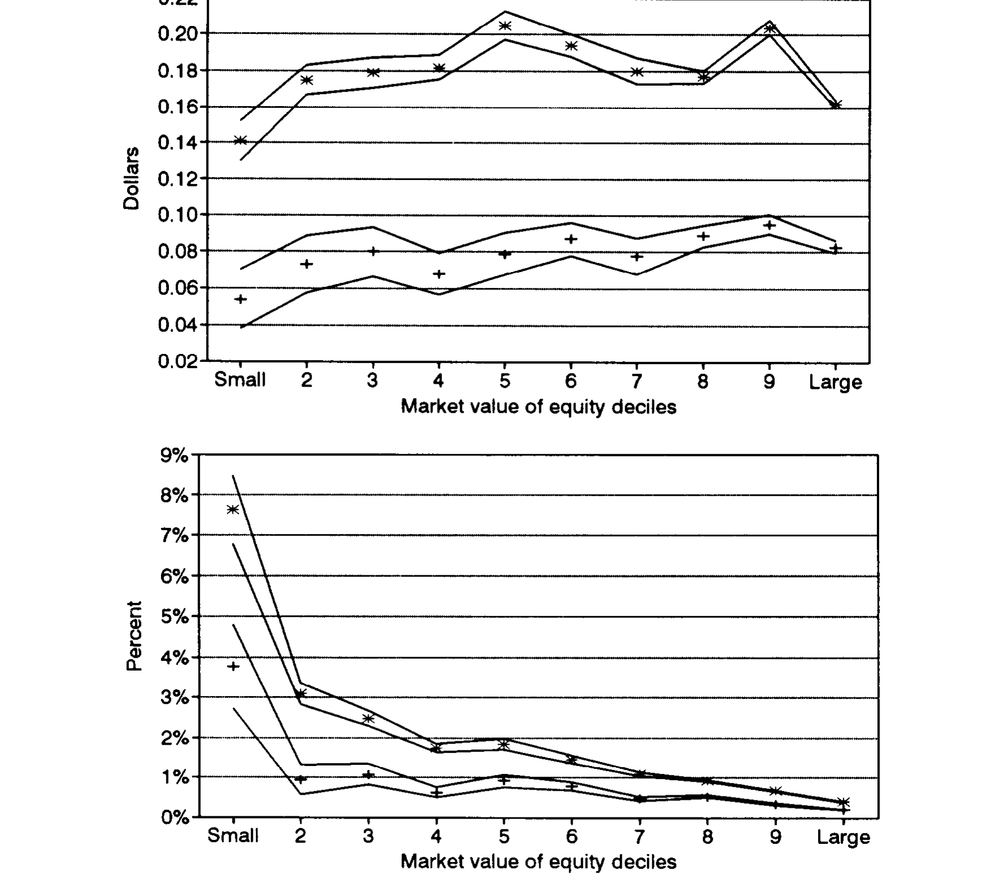
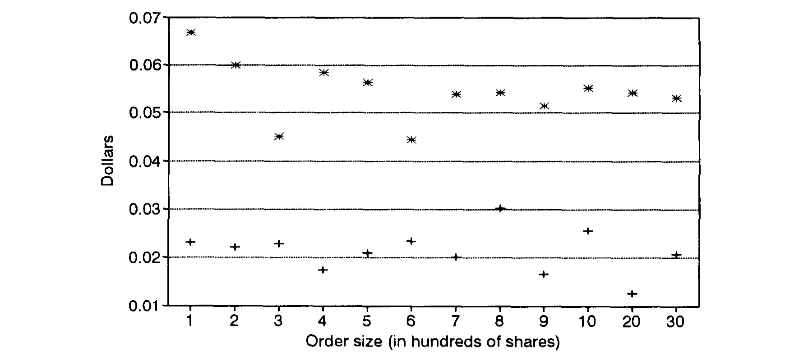
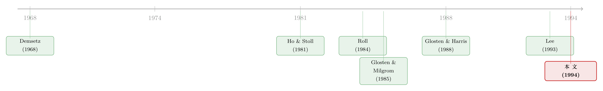

你盯着的那个「买卖价差」，有一半是假的
本文读的是 Petersen & Fialkowski (1994, Journal of Financial Economics)：屏幕上那个人人都在用的报价价差，严重高估了投资者真正付出的交易成本——市场单很多时候成交在价差之内，有效价差平均只有报价价差的一半；更要命的是，当报价价差走阔时，只有 10%–22% 会真正落到投资者头上，两者的相关系数不到 0.1。一句话：你拿来当「交易成本」的那把尺子，量错了。
1 引言：一把被用了三十年的「错尺子」
先问一个看似不需要问的问题：买卖一只股票，要花多少钱？
教科书的答案干脆利落。在标准的证券市场模型里 [比如 Roll (1984)]，交易发生在专家（specialist）挂出的报价上：市场买单按卖价（ask）成交，市场卖单按买价（bid）成交，于是一来一回，投资者付掉的就是那个 买卖价差 (bid-ask spread)。这个价差之所以存在，一半是因为做市商要补偿持有存货的成本 [Ho and Stoll (1981)]，一半是因为它面对的对手里，总有人比它更清楚这只股票将来值多少钱 [Treynor (1971)、Glosten and Milgrom (1985)]。
逻辑闭环，优雅得让人放心。于是几十年里，做实证的人都顺手把屏幕上那个 报价价差 (posted spread) 拿来当作「交易成本」的代理变量——检验市场是否有效，要扣掉它；检验资产定价模型里流动性溢价，要用到它；检验价差理论本身，更是直接拿它当被解释变量 [Demsetz (1968)、Branch and Freed (1977)、Benston and Hagerman (1974)]。
但这把尺子有一个谁都知道、却又被默认无害的裂缝：很多交易，根本不在报价上成交，而是成交在价差之内。 Blume and Goldstein (1992a) 数过，他们样本里有 12%–31% 的成交发生在价差里面。一旦成交价跑进价差内部，报价价差就不再是你付出的成本——你能以低于卖价的价格买入、以高于买价的价格卖出，真正掏出去的，是一个更小的数字，作者称之为 有效价差 (effective spread)。
裂缝早就摆在那里。可问题在于：到底裂得有多大？ 这正是这篇论文要回答的事。
2 「价格改善」是从哪里冒出来的
接着，一个自然的问题是：成交价凭什么能比报价更好？作者把这种「比报价更划算」的部分定义为 价格改善 (price improvement)，并耐心地拆出三个来源。
第一，专家的介入。 专家可以「截停一笔订单」（stop an order）：一张买单进来时卖价是 42 1/8，他先口头担保「成交价不会高于 42 1/8」，然后等。若片刻后一张卖单到了，两单可以在 42 撮合；若一直没等到，他再按 42 1/8 把单子打在挂着的卖价上。注意——专家自己一分钱仓位都没动，却凭手里的「时间裁量权」给买方挤出了 1/8 的好处。（关于这套裁量权的代价与边界，可参见《停牌，原来是交易所给「监工」按下的暂停键》。）
第二，藏起来的限价单和场内交易员。 专家经手的成交量不到总量的 20%（NYSE Fact Book, 1992），剩下的流动性大量来自公开限价单。而专家只被要求挂「有代表性的」报价，不必把最好的限价单全亮出来——McInish and Wood (1992) 发现，本该改善报价的限价单里，有 51% 根本没被显示，它们的中位数规模是 500 股。市场单一旦撞上这些「隐形」限价单，就以好于报价的价格成交了。场内交易员同理，他可以站在专家身边，悄悄报一个比屏幕更好的价，把单子截走。
第三，两张市场单的对撞。 一买一卖恰好同时到达、被撮合在一起，那么至少有一方、甚至双方，都拿到了价格改善。只是这种巧合相当罕见 [Hasbrouck (1988)]——现实中，它通常是「截停」的副产品。
三条来源指向同一件事：报价之内，藏着一个看不见的折扣。
3 怎样直接把「有效价差」量出来
但真正关键的一步，不在于讲故事，而在于测量。
在此之前，人们只能间接估计有效价差。一种办法是从成交价里反推 [Glosten and Harris (1988)]；另一种更流行的办法，是拿成交价去比报价中点（quote midpoint）[Lee (1993)、Blume and Goldstein (1992b)]。后者的问题在于：它只在「市场单全部和限价单撮合」时才准；一旦市场单是和另一张市场单对撞成交的，这个估计就会系统性偏高——因为它把本该算作「零成本」的对撞，记成了付掉半个价差。
作者的做法干净得多：直接拿每一张订单的成交价，去比它被提交那一刻的报价。 这就需要一份既有成交、又有订单时点的数据。把成交价往报价里嵌进去多深，就是这张单子拿到的价格改善。
具体地，相对于订单所发往那家交易所「自己的」报价，价格改善定义为
$$\text{Price improvement}_{\text{quotes}} = \begin{cases} \text{Ask price} - \text{Transaction price} & \text{for buy orders} \\ \text{Transaction price} - \text{Bid price} & \text{for sell orders} \end{cases}$$
可一只股票在多家交易所挂牌，于是有许许多多个买价和卖价。把所有交易所的卖价取最低、买价取最高，就得到 全市场最优报价 (best bid or offer, BBO)，它们之差就是 最优价差 (best spread)。相对于这个共同基准，价格改善是
$$\text{Price improvement}_{\text{best quotes}} = \begin{cases} \text{Min(Ask price)} - \text{Transaction price} & \text{for buy orders} \\ \text{Transaction price} - \text{Max(Bid price)} & \text{for sell orders} \end{cases}$$
两个定义的差，本身就是一个有意思的量：它度量了一家交易所「报价的质量」。因为相对于自家报价的价格改善，可以靠把报价故意挂得更差来人为做大——你先挂个烂价，再「改善」给客户，看上去很慷慨。所以作者把焦点放在相对最优报价 BBO 的口径上，这是更诚实的一把尺。
有了价格改善，有效价差就顺理成章。投资者买的时候能得到一次改善，卖的时候又能得到一次，于是来回算两遍：
直觉上，有效价差就是「预期买入价」减去「预期卖出价」。
这里有个小心思值得点一句：式 (3) 假定买、卖两侧拿到的价格改善一样大。对单个观测，这未必成立；但作者证明，对平均值它是无偏的。举个例子：报价价差是 1/4，每张市场单都和另一张对撞。一半的买单在买价成交（改善 1/8），一半在卖价成交（改善 0）。代入式 (3)，前一组算出 -1/4，后一组算出 1/4，平均恰好是 0——而这正是这批订单实际付出的平均价差。尺子在个体上抖，在均值上却是稳的。
4 数据：两份互补的订单账本
要让这把尺子落地，作者拼了两份样本，刻意让它们一横一纵、互相补台。
零售样本（retail sample）。 三家大型零售券商电子下单的 40,865 张市场单，覆盖 1991 年 4 月 25 日与 8 月 20 日两天，发往纽约（NYSE）及波士顿、Madoff、Midwest、Pacific 等地区交易所。报价与深度来自 Bridge Information Systems。这两天既不放量也不剧烈，NYSE 成交分别为 1.67 亿股和 1.84 亿股，都贴着 1991 年 1.79 亿股的均值。它的长处是横截面广：1,414 只个股，差不多是当时 CRSP 覆盖 NYSE 个股的 80%。
TORQ 样本。 取自 NYSE 的 Trades, Orders, Reports, and Quotes 数据库 [Hasbrouck and Sosebee (1992)]，覆盖 1990 年 11 月到 1991 年 1 月三个月，但只有 144 只股票、且只含发往 NYSE 的电子单。它的长处是时间长，正好用来检验「零售样本那两天会不会太特殊」。
两份样本都只含市场单、且都是电子路由的小单（零售样本 99% 在 3,000 股以内，TORQ 94% 在 3,000 股以内），因此结论更贴近散户而非大宗交易者所享受的价格改善。
5 主要结果：一半的价差，与几乎为零的相关性
然后，结果出来了，而且一边倒。
第一刀：量级。 在零售样本里，相对于自家交易所的报价，50% 的订单拿到了价格改善，平均改善 8.9 美分，而平均价差是 26.3 美分。换到更严格的全市场最优口径，最优价差平均 18.0 美分，仍有 35% 的订单成交得比报价好，平均改善 4.8 美分——于是有效价差只剩 18.0 - 2 \times 4.8 = 8.4 美分，恰好是报价价差的一半。TORQ 样本如出一辙：平均 BBO 价差 17.1 美分，有效价差 9.9 美分。两份样本里，有效价差／报价价差的均值之比分别是 52% 和 63%。
把它和「用成交价比中点」的旧办法对一对，差距触目惊心：Lee (1993) 估出的有效价差是 1988 年 19.4 美分、1989 年 18.4 美分；Blume and Goldstein (1992b) 给的区间是 12.3 到 25.0 美分。旧办法估出来的，差不多是本文直接测量值的两倍。偏差从哪来？正是那些被「截停」的对撞单：TORQ 样本里 25% 的订单被截停，而被截停的订单拿到价格改善的概率高达 49%，远超 32% 的无条件均值——旧办法把这一大块改善统统记成了成本。
这个「打对折」的规律在每一个市值十分位里都稳稳成立。如表 1 所示，价差按美元计几乎和公司规模无关（最小到最大十分位都在 0.14–0.21 美元之间晃），但有效价差始终只有报价价差的一半上下；总体上，报价价差 0.180 美元对有效价差 0.084 美元。

Table 1
把价差换成「占股价的百分比」，规模效应才显形：小公司的价差不是更小，而是它们的股价更低，于是百分比价差更高——从最小十分位的 7.63% 一路降到最大十分位的 0.40%（这与 Keim (1989) 基于全 NYSE 报价的数字吻合）。有效价差则从 3.77% 降到 0.19%，全程贴着报价价差的一半走。TORQ 样本里同样的曲线，从 7.33% 降到 0.35%，和零售样本的 0.40% 几乎重合。

Figure 1: Average best posted () and effective ( + ) spreads by market value of equity deciles in retail*
第二刀，也是更狠的一刀：相关性。 量级减半，研究者或许还能自我安慰——「那我把所有价差都乘以 0.5 不就行了」。可作者紧接着指出：报价价差和有效价差的简单相关系数还不到 0.1。换句话说，报价价差走阔时，有效价差几乎纹丝不动——当报价价差上升，只有 10% 到 22% 真正以更高的有效价差落到了投资者头上。这意味着你没法靠一个固定折扣把报价价差「修正」成有效价差：它不只是量级错了，而是连方向都对不上。
这才是对实证研究最致命的一点。把报价价差当流动性成本的代理变量，错的不仅是水平值（高估一倍），而是它和真实成本之间几乎不存在的相关性——任何「价差越宽、成本越高」的横截面推断，地基都在晃。
6 交易所之间：市场真的「一体化」了吗
故事到这里还能再转一道弯。
既然能直接算出每张单的预期成交价，作者顺手做了件别人做不了的事：比较同一类订单在不同交易所的执行质量。 交易所被规定必须按全市场最优价成交、否则就把单子转走，照理说在哪儿成交都一样。可数据偏偏说不一样——地区交易所上的有效价差，显著大于 NYSE。这个差异在控制了订单类型之后依然顽固。
如图 3 所示，把价格改善按订单规模铺开，NYSE 与地区交易所走出了两条分开的线。结论很硬：在同样的订单上，预期成交价随交易所系统性地不同——美国股票市场，并没有完全一体化。 这也连带提出一个值得追问的事：既然交易所之间执行质量有别，券商把订单路由到哪里，本身就是一笔账。（这条线后来长成了一整支文献，可参见《为你的订单付钱，结果你却付了更多》与《报价，是邀请，还是暗号？——拆开 NYSE 之外那张「成交成本」的账单》。）

Figure 3: Average price improvement by order size for NYSE () and regional ( + ) orders; price*
7 文献脉络
把这篇论文放回它的家谱里，线索其实很清晰。
最早，是 Demsetz (1968) 把「交易成本」第一次摆上台面，告诉大家价差是即时性的价格。随后 Ho and Stoll (1981) 从存货成本、Glosten and Milgrom (1985) 从逆向选择，分别给价差为何存在提供了两套微观基础——前者讲做市商怕被套住，后者讲做市商怕遇到知情者。（逆向选择这条线如何抬高了「要求回报」，可参见《价差是真的，成本却是假的——逆向选择究竟从哪里抬高了「要求回报」》。）与此并行，Roll (1984) 给出一个只用成交价就能反推价差的优雅公式，让「价差」成了人人可算的数。

但所有这些工作，都默认了一件事：成交，发生在报价上。于是到了估计「真实成本」的环节，Glosten and Harris (1988) 从成交价里拆价差，Lee (1993) 与 Blume and Goldstein (1992b) 拿成交价比报价中点——它们都绕不开「市场单只和限价单撮合」这个隐含假设。Petersen and Fialkowski (1994) 站到的，正是这条链的下一环：他们第一次拿到了订单层面的数据，把「市场单其实常常成交在价差之内、甚至和彼此对撞」这件被假设掉的事，直接量了出来，从而戳破了报价价差这个用了几十年的代理变量。它也因此与 Amihud and Mendelson (1989) 那条「交易成本应进入预期收益」的资产定价线索接上了头——如果连成本本身都量错了，那条线索的实证地基自然要重估。
8 评论与延伸（Q&A + 研究方向）
(a) 几个可能的疑问
Q：有效价差只有报价价差的一半，是不是说投资者「占了便宜」、市场对他们很慷慨？
不能这么读。价格改善不是天上掉的馅饼，而是流动性的真实价格本就比屏幕上挂的低——隐形限价单、场内交易员、对撞单各自让出了一点。它纠正的是「我们以为成本有多高」，而不是说成本凭空消失了。投资者付得比想象中少，但仍然付了。
Q：式 (3) 假定买卖两侧价格改善相等，这个假定靠谱吗？
对单笔订单不靠谱，对均值靠谱。作者用「报价 1/4、全是对撞单」的例子证明：个体估计会一正一负地抖（
-1/4与1/4），但平均恰好收敛到真实的平均价差0。所以本文所有结论都建立在样本均值上，而非逐单解读——这是它能成立的前提。
Q：和「拿成交价比报价中点」的传统估计相比，差别到底出在哪？
出在被「截停」的对撞单上。中点法默认市场单都和限价单成交，于是把对撞单也记成付了半个价差；可 TORQ 样本里
25%的单被截停、其中49%拿到了改善。正是这一大块被误记的改善，让中点法把有效价差高估了近一倍（Lee 的18–19美分 vs 本文的8–10美分）。
Q：样本只有两天加三个月、还只含小额电子市场单，外部效度够吗？
这是最实在的担忧。结论严格说只适用于散户的小额市场单；大宗交易、限价单、人工递到专家台前的单都不在内。作者也诚实地把话说在前面。不过两份样本一横一纵互证、两天贴着年均成交、十个市值十分位里规律都稳，至少说明「报价价差高估成本」不是某一天的偶然。
Q：交易所之间执行质量有别，会不会只是因为不同交易所接到的订单本就不同（选择效应）？
作者控制了订单类型后差异仍在，这降低了部分担忧。但订单路由本身是券商的内生选择——什么样的单被送去地区所、什么样的留在 NYSE，未必随机。所以「市场未完全一体化」的解读是稳的，但要把地区所有效价差更大全部归因于交易所本身、而非订单构成，还需要更强的识别。
Q：报价价差和有效价差相关性不到 0.1，对资产定价的「流动性溢价」研究意味着什么？
意味着用报价价差做的横截面流动性检验都得打问号。如果真实成本（有效价差）和报价价差几乎不相关，那么「高价差股票要求更高收益」里的那个价差，可能压根没在度量投资者真正承担的成本——溢价的符号与大小都可能被污染。
(b) 几个可能的研究问题与提案
1. 把这把尺子搬进公司债市场。 【经济故事】公司债的「报价价差」同样是流动性研究的主力变量，可债券大量在交易商间私下议价、成交常落在挂牌买卖价之内，本文的「报价 vs 有效」之问几乎可以原样移植：TRACE 时代，公司债的挂牌价差到底高估了多少真实成本？ 【可行性】高。TRACE 提供逐笔成交，配合交易商报价或 dealer quote 数据即可构造债券版的价格改善与有效价差。识别上可借鉴本文的「成交价比提交时报价」思路。与既有的债券流动性度量工作（如《把「成交价」从「成交量」里解放出来——重新丈量公司债的流动性》）天然衔接。
2. 外资持有人与执行质量。 【经济故事】本文揭示了同一订单在不同交易所的预期成交价不同。一个自然的延伸：跨境投资者（尤其是公司债里的外资持有人）是否系统性地拿到更差的有效价差？若是，这究竟来自逆向选择，还是来自路由/做市关系的劣势？ 【可行性】中。需要带交易方身份的成交数据（如某些监管层面的债券持仓-成交库）。识别难点在于把「外资」与「订单特征」分开——可用券商固定效应或在同一债券同一时窗内比较内外资成交价。
3. 报价价差走阔时，价格改善去了哪里？
【经济故事】本文最反直觉的结果是：报价价差上升时只有 10%–22% 传导到有效价差。那剩下的 78%–90% 被谁吸收了？是隐形限价单更踊跃、还是专家在波动时更愿意截停？把「传导率」拆到来源层面，能直接回答「价差到底在补偿什么」。
【可行性】中。需要订单簿与截停标记（TORQ 类数据或现代交易所的 message 数据）。可在波动率冲击（如宏观公告窗口）前后，分解有效价差对报价价差的传导。
4. 现代散户「免佣 + 为订单流付费」时代的重测。 【经济故事】1994 年的价格改善靠专家裁量与隐形限价单；今天靠的是批发做市商的内部撮合。同一个问题——有效价差是报价价差的几成、两者相关性几何——在 PFOF 主导的市场里答案会不会反转？ 【可行性】高。SEC Rule 605/606 执行质量报告、加上交易所与批发商成交数据已相当丰富。可直接复刻本文口径，做一次跨四十年的对照（与《集中，到底是谁的福利？——一张散户订单的旅行账单》互为镜像）。
最后说说我自己的判断。
这篇论文的贡献，不在某个花哨的方法，而在一个被所有人默认无害的假设，第一次被数据正面证伪。它用最朴素的「成交价比提交时报价」，把一个量化了几十年却没人真正测过的东西测了出来：报价价差高估真实成本约一倍，且两者相关性近乎为零。这两个数字，足以让一大批以报价价差为代理变量的实证结果重新接受审视——这就是好的微观结构论文该有的杀伤力。
对识别，我有两点保留。其一是外部效度：结论只覆盖散户小额市场单，限价单、大宗单、人工单全在样本之外，而恰恰是这些订单承担了市场上大部分的金额与信息含量。其二是交易所比较里的选择效应：订单去哪个交易所成交并非随机，把地区所更高的有效价差完全归因于交易所本身，识别上还不够干净——这一步更像是一个引人入胜的相关性，而非铁板钉钉的因果。
后续我最想看到的，是把这套「报价 vs 有效」的拷问搬进信用市场：在一个本就靠议价、成交大量落在挂牌价之内的市场里，我们日常使用的债券流动性度量，究竟有几分是真、几分是屏幕上的幻觉？这恰恰是 1994 年这篇论文留给三十年后的我们，最值得接着写下去的一问。
参考文献
Benston, G. J., & Hagerman, R. L. (1974). Determinants of bid-asked spreads in the over-the-counter market. Journal of Financial Economics 1(4), 353–364.
Blume, M. E., & Goldstein, M. A. (1992a). Differences in execution prices among the NYSE, the regionals and the NASD. Working paper no. 492, White Center for Financial Research, University of Pennsylvania.
Blume, M. E., & Goldstein, M. A. (1992b). Displayed and effective spreads by market. Working paper no. 27-92, White Center for Financial Research, University of Pennsylvania.
Demsetz, H. (1968). The cost of transacting. Quarterly Journal of Economics 82(1), 33–53.
Glosten, L., & Harris, L. (1988). Estimating the components of the bid/ask spread. Journal of Financial Economics 21(1), 123–142.
Glosten, L., & Milgrom, P. (1985). Bid, ask and transaction prices in a specialist market with heterogeneously informed traders. Journal of Financial Economics 14(1), 71–100.
Hasbrouck, J. (1988). Trades, quotes, inventories, and information. Journal of Financial Economics 22(2), 229–252.
Ho, T., & Stoll, H. (1981). Optimal dealer pricing under transactions and return uncertainty. Journal of Financial Economics 9(1), 47–73.
Keim, D. B. (1989). Trading patterns, bid-ask spreads, and estimated security returns: The case of common stock returns at calendar turning points. Journal of Financial Economics 25(1), 75–97.
Lee, C. (1993). Market integration and price execution for NYSE-listed securities. Journal of Finance 48(3), 1009–1038.
McInish, T. H., & Wood, R. A. (1992). Hidden limit orders on the NYSE. Mimeo.
Petersen, M. A., & Fialkowski, D. (1994). Posted versus effective spreads: Good prices or bad quotes? Journal of Financial Economics 35(3), 269–292.
Roll, R. (1984). A simple implicit measure of the effective bid-ask spread in an efficient market. Journal of Finance 39(4), 1127–1139.
Treynor, J. (1971). The only game in town. Financial Analysts Journal 27(2), 31–53.